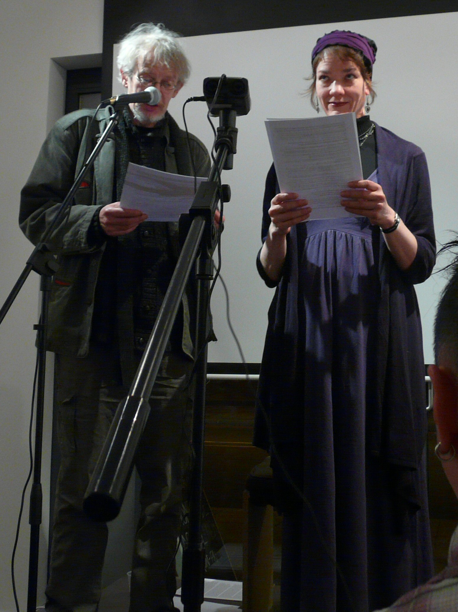

Sunday, November the 20th, 2011
back to: title, date or indexes
I spent yesterday recovering from the rigours of the Evening Of Lopsided Prose & Lugubrious Music at Woolfson & Tay held on Friday. Those of you who were unable to attend or who could not be dragged there by wild horses will be pleased to know that the whole kit and kaboodle was recorded by ResonanceFM (thanks to Chris Weaver and Johnny Seven) for broadcast as a Hooting Yard Special at a date to be announced, and thereafter as a pod thing. I shall alert you to these developments when I know the details.
I must also thank Shivaun Woolfson and Frances Tay, whose splendid independent bookshop / cafe / gallery hosted the event and who ensured the whole thing ran smoothly. I suggest all Hooting Yard devotees make a beeline for the shop whenever they are in London. It occurs to me that every now and then you may actually wish to read something other than my outpourings, in which case you will find a fine selection of books there.
Thanks too of course to Outa_Spaceman for joining me on singing and ukulele duty. I can neither sing nor play the ukulele, so that part of the evening would have been an absolute disaster without him. I am grateful too to Pansy Cradledew for her assistance during the Poetry Masterclass.
My only disappointment is that the assembled throng seemed not to understand I was delivering a series of serious lectures on topics as diverse as birds, owl gods, Virginia Woolf's sausage and haddock dilemma, and seaweed heroes, and my talks were greeted with immoderate laughter and the occasional outbreak of hilarity. As I said in the programme notes, “unseemly pangs can be tempered by moral balance”. Do try to remember that next time, whenever the next time is.

Mr Key & Ms Cradledew explain poesy to the masses
Snap by Loz Flowers